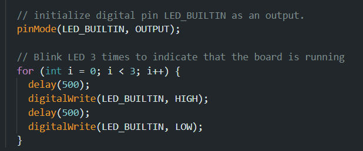
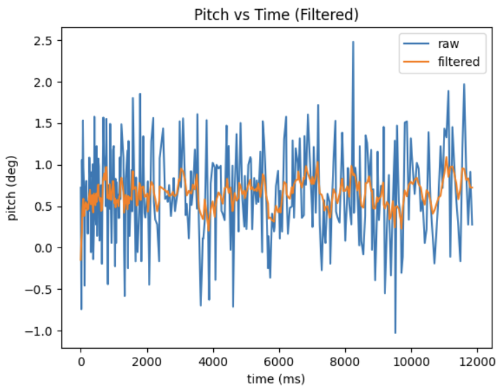

Hi! My name is Jack Strope. I'm currently pursuing my MEng in Electrical and Computer Engineering at Cornell. I'm most interested in embedded systems, robotics, and integrated circuit design. This website documents my projects in ECE 5160: Fast Robots.
Lab 1
This lab focused on becoming acquainted with the Artemis board, including programming the board with the Arduino IDE (Lab 1A) and bluetooth communication (Lab 1B).
Lab 1A
In this part of the lab, I hooked up the Artemis board to my laptop and uploaded several example programs to test the hardware.
Blink
After connecting the board to my computer and selecting the board in the Arduino IDE, I ran Blink, an example sketch built in to the Arduino IDE. The program simply swithces the onboard LED on and off every second.
Serial
The next example script run on the board was Serial, which allows the user to type characters into the Serial Monitor in the Arduino IDE and echoes them back.
Temperature Sensor
The next example script run was AnalogRead, modified to continuously print the temperature sensor's reading in Fahrenheit. Notice in the video below, the temperature starts around 85°F, but after blowing on it for a couple seconds, it lowers to around 82°F.
Microphone
The last example script run is MicrophoneOutput, which displays the loudest frequency detected by the microphone.
Middle C Detector
Since I'm enrolled in the 5000-level version of the class, I did the additional task of making my own script to blink the LED when a "C" note (~261Hz) is the loudest frequency. To do so, I simply modified the MicrophoneOutput script, adding a simple conditional that writes HIGH to the LED if the loudest frequency is between 258Hz and 264Hz (to account for noise/interference that affect the reading) and LOW otherwise.
Lab 1B
In this part of the lab, I established Bluetooth communication between the Artemis board and my laptop via Bluetooth Low Energy (BLE).
Prelab
After ensuring the latest version of Python was installed on my computer, I set up a virtual environment, installed the necessary Python libraries, and installed the codebase provided in the lab handout. I then activated the virtual environment and launched JupyterLab.
The next step was to establish a connection between JupyterLab on my computer and the Artemis board via BLE. To do so, I first ran the ble_arduino.ino script from the codebase on the board to print its MAC address. I copied this into the file connections.yaml in the Python virtual environment. I then generated a UUID using the uuid library in JupyterLab and copied it to both connections.yaml and ble_arduino.ino. I then verified that the connection between the board and computer was successful with some test commands provided in a demo Jupyter notebook.
Task 1
First, I implemented the ECHO command, which simply sends the input string back with an added prefix and postfix. The implementation is shown below.
Task 2
The next task was to use the SEND_THREE_FLOATS command, which extracts the three floats from the message sent from JupyterLab to the board and prints them to the serial monitor. The implementation is shown below.
Task 3
Next, I added a new command GET_TIME_MILLIS which makes the Artemis board respond with the current time in milliseconds.
Task 4
Next, I defined a notification handler in the Jupyter notebook to extract the time from the response string sent by the GET_TIME_MILLIS command. The following code snippets show the handler and then the commands used to receive the time using the handler.
Task 5
In this task, I determined how fast messages can be sent by making a new command that repeatedly sends the current time in milliseconds to Jupyter for 100 iterations.
The code used to receive the messages in Jupyter accepts messages for 10 seconds to ensure all 100 go through. This code and the first several received timestamps are shown below.
By subtracting the last timestamp from the first and dividing by the number of messages, we calculate the effective data transfer rate to be 100 messages / (26.165s - 23.596s) = 38.926 messages per second.
Discussion
In this lab, I learned how to connect and program the Artemis board using the Arduino IDE, and how to connect to it from my computer via Bluetooth. The ability to connect to the board this way will be extremely useful when the board is on the robot--it won't be plugged into my computer then, so a method of wireless communication with the robot will be necessary. Evaluating how fast data can be sent with different methods will also prove useful in deciding what methods to use for communication with the robot in future labs.
Lab 2
In this lab, I tested the IMU by gathering accelerometer and gyroscope data. This data will allow the robot to keep track of its orientation and acceleration. At the end of the lab, I also tried controlling the RC car as it comes in the box with the controller to get a feel for how it can move, and recorded a couple of stunts.
Setup
Setting up the IMU with the Artemis board was fairly straightforward. After installing the necessary library in the Arduino IDE, I connected the IMU to the board using a QWIIC connector. I then ran the library's example script, which collects and prints the sensor's acceleration, gyroscope, magnetometer, and temperature data. The data is sent to the MCU via I2C, so to identify which device to receive data from, the script defines a macro AD0_VAL, the last bit of the I2C address. For the IMU, this value is 1 by default. Additionally, I added the following code to the setup() function in this script and the BLE script to serve as an indication of when the board starts running.

To more easily monitor the x, y, and z acceleration data, I opened the Serial Plotter, which plots the data in real time. This is shown in the video below. When the IMU sits flat on a surface, the x and y acceleration curves stay steady around 0, while the z curve stays steady around 1000 milli-g, or 1g of acceleration. This is due to gravity accelerating the board downward at 1g at all times. If I accelerate the board in any direction, the curve cooresponding to that direction responds accordingly. If I rotate the board, the acceleration due to gravity shifts from the z-direction to the x/y directions.
Accelerometer
Next, I modified the example script to calculate the roll and pitch of the IMU using the following equations.
To check the accuracy, I recorded the measured roll and pitch for -90°, 0°, and 90°. For 0° for both roll and pitch, I held the IMU down on a flat surface. I measured -90° and 90° for roll and pitch separately, placing the IMU at 90° relative to the horizontal by holding it against the side of a box on the desk. The results are shown in the images below.
0° roll and pitch-90° roll90° roll-90° pitch90° pitch
Though noisy, the data appears very accurate, to within a degree or two in each of the above measurements.
Time-domain Plots
To analyze the data in Python, I added a new command to the BLE script to continuously calculate the roll and pitch in a loop and send the data (with timestamps) to Jupyter. With the data in Jupyter, I then plotted roll and pitch vs time. The results are in the plots below.
Noise Frequency Analysis
We can analyze the frequency of the noise by plotting the Fourier Transform of the data. To do so, I used the following Python code to compute and plot the FFT of the roll and pitch data.
This generated the plots below.
I then gathered new data while gently hitting the table to generate vibrational noise and repeated the above to generate the following plots.
Even in these cases, the amplitude drops significantly above 0Hz and stays relatively consistant after. Based on the plots, I'll estimate the cutoff frequency to be about 1Hz.
Low-pass Filter
Using this cutoff frequency, I then implemented a simple low-pass filter to reduce the noise level of data sent to Jupyter.
Replotting this data for both of the above cases, I obtained the following plots.
Still IMU

IMU with vibrational noise
We can see from the plots that the low-pass filter is quite effective. It can be made more effective by lowering the cutoff frequency. This would more aggressively filter out high frequencies (noise), but at the risk of filtering out data that should be kept.
RC Car Testing and Stunt
To finish this lab, I mounted the battery on the RC car as it comes in the box and tried it out to get a feel for how it should move. I used the remote controller to drive the car around the hallway in the video below. It's worth noting that, at the speed the RC car moves, the tires have very poor traction on the hallway floor, making it easy to turn in place, but difficult to steer while moving. This is in large part because, when controlling it with the RC controller, the motors are either fully on or fully off, making it difficult to slow down to turn without drifting.
To improve traction, I moved to a carpeted room and tried driving the car there. The traction was significantly improved, allowing the car to be controlled--in particular steered--much more easily. It also makes it much easier to flip the car without requiring as much speed, but this also means the car is more prone to flipping unintentionally. In this higher-traction environment, I played around with the car and attempted some stunts. My favorite--shown in the video below--was what happens when I flip the car and continue driving the motors at full speed. The car continues flipping without really moving anywhere. If I steer at the same time, the car looks like it's breakdancing!